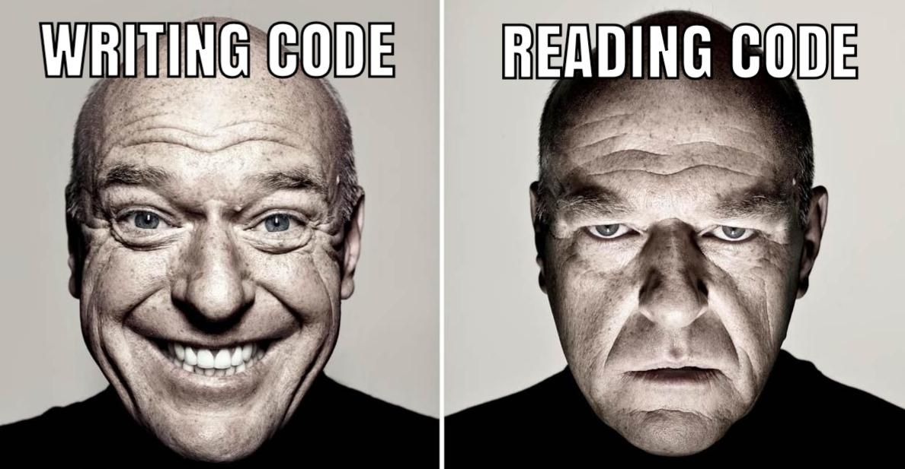
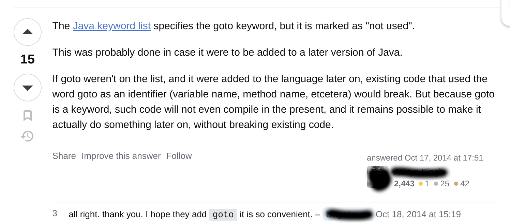
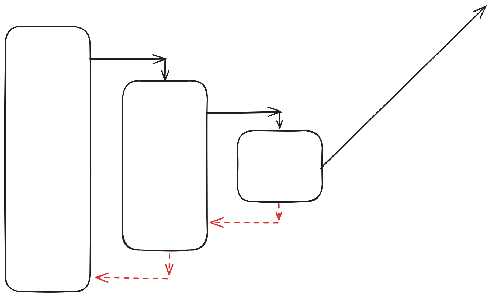
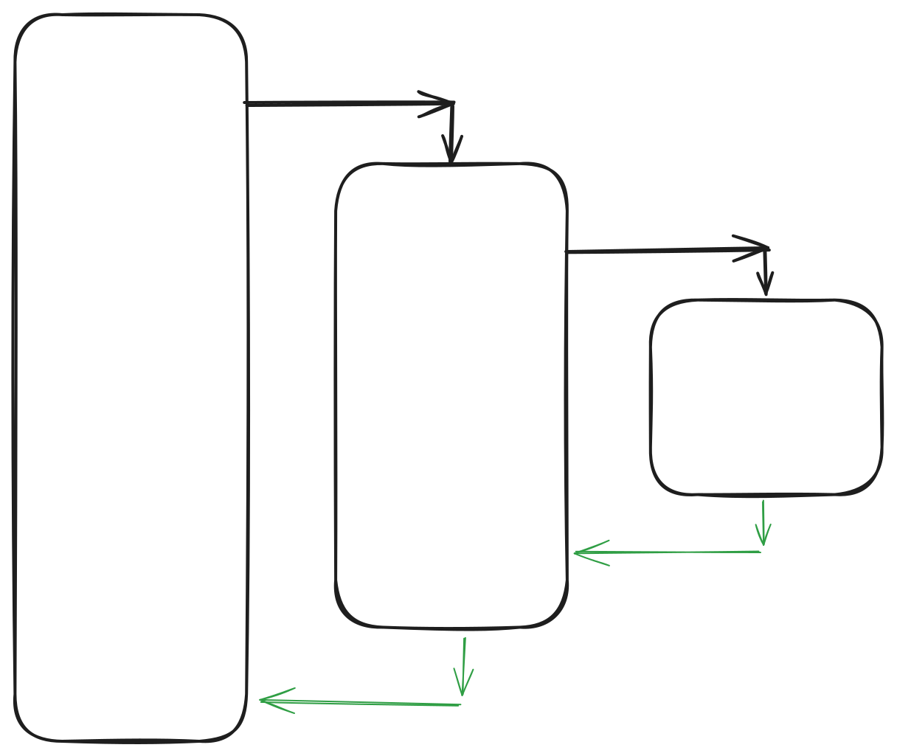
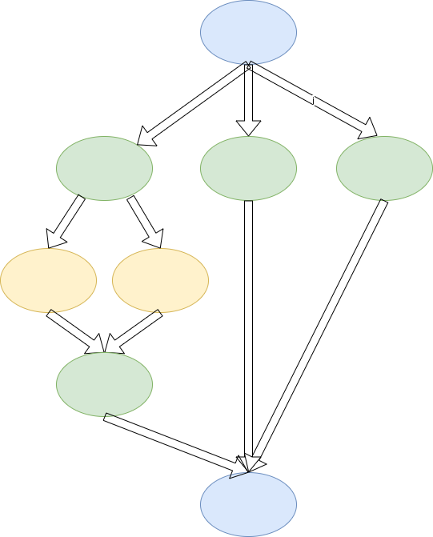

Organizing chaos
Structured Concurrency
Konrad Szałkowski
Java explorer, performance tinkerer
Dreams of marrying GPUs and Java
X: @smijran, LinkedIn: I am not hiding :)
.data
data1 db 11
data2 db 22
.code
EXCHANGE:
MOV AL, data1
MOV AH, data2
MOV data1, AH
MOV data2, AL
END:
HLT
We wanted more
- COBOL
- FORTRAN
- BASIC
And they were effective...
But not efficient...
HIM showed up

GOTO is harmful
But why?
The problem is order and control
Programs in BASIC could be simple
10 PRINT "Hello World!"
20 PRINT 2 * 2
30 PRINT "JVM" ;
40 PRINT " 2024!"
But someone could write something like this
10 PRINT "START"
20 INPUT "Guess an operation."
30 INPUT "Enter a number to check result (1-3): ", N
40 IF N = 1 THEN GOTO 300
50 IF N = 2 THEN PRINT "Result of operation is 8" : GOTO 100
60 IF N = 3 THEN GOTO 200
70 GOTO 400
80 PRINT "END"
90 END
100 GOTO 300
200 PRINT "Result of operation is 7"
210 GOTO 100
300 PRINT "Result of operation is 9"
310 GOTO 70
400 PRINT "Invalid choice"
410 GOTO 70
With great power comes great responsibility
Responsibility for others - reading your code

How to maintain control?
Structured programing
Code will flow
As a block
Flow control will be achieved by
This gave us a sense of predictability
This gave us a sense of structure
This gave us a sense of order
What about Java?
GOTO is a keyword
Causing compile error
Ufff...

What about exceptions?
throw new RuntimeException();
What about labels?
someLabel:
for (int i = 0; i < 10; i++) {
...
for (int j = 0; j < 100; j++) {
break someLabel;
}
}
They are cumbersome
But do not cause problems with reasoning
You are not having this

Instead of this

Memory:
From 8 MBs of RAM in my 1995's machine
To 32GB in this laptop
CPUs:
From 1 core - 126.5 MIPS in 1995
To 16 cores - 70000 MIPS - this laptop
It was not easy to grasp
We started to write concurrent programs
We realized concurrency is messy
However it helped to be more efficient
We made our programs use every core
But it was not enough for us
OS Threads started to limit us
We started to think of how to get MOAR threads
Go - goroutines
Kotlin - coroutines
Java 21 - Virtual Threads
There is no free lunch
What can you tell about this code?
Thread.ofVirtual().name("Kawabanga")
.start(() -> somethingNeedsToBeMade());
Thread.ofVirtual().name("Chumbawamba")
.start(() -> evenMoreThingsNeedsToBeMade());
Was it successful?
What was the result?
They came out:
- Martin Sustrik
- Nathaniel J Smith
- Roman Elizarov
They came to the same idea:
Go/async/VThread
is new GOTO
Remedy:
Structured Concurrency
Put parralel tasks into structure/blocks to make reasoning about them
possible
Why?
- Ordering problems
- Race conditions
- Deadlocks
- Starvations
- ...
This allows you to answer:
- Has any of threads failed?
- Was any of threads already successful?
- And many more ...
Java Structured Concurrency
We are people 30+
We want to meet together
There are 5 of us
With Java 23... preview API...
Meeting time choosing simulation
Lets organize party
Scopes can form tree
Lets play football

We can even throttle, while eating pizza
Real life examples:
- Downloading chunked files
- Scraping websites
- Parallel transformation of elements
- Agregating elements for some computations
We want to have thread wide values

ThreadLocals have problems:
- Mutability
- Lifecycle
- Inheritance
Mutability
There is ThreadLocal#set()
Inheritance
Each Thread has it own copy of value
Lifecycle
We have thread pools
Who remebers to cleans after themselves in kitchen?
Always?
We used ThreadLocals to share a value within the thread
Assuming that code is executed by this thread sequentially
And then thread ends
What is alternative?
Java Scoped Values
A scoped value is a value that may be safely and efficiently shared to methods
without using method parameters.
Still preview API
We are painting rooms for our company, but colors change
Simple HTTP server
Real life examples:
- Passing authenticated user down the stack
- Passing logging information (MDC)
- Passing metrics registry
Every rose has its thorn
Memory cost
Records for aggregating contextual information